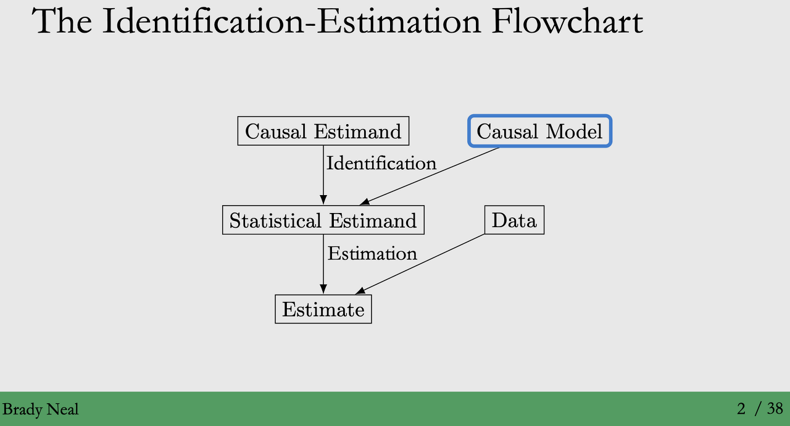
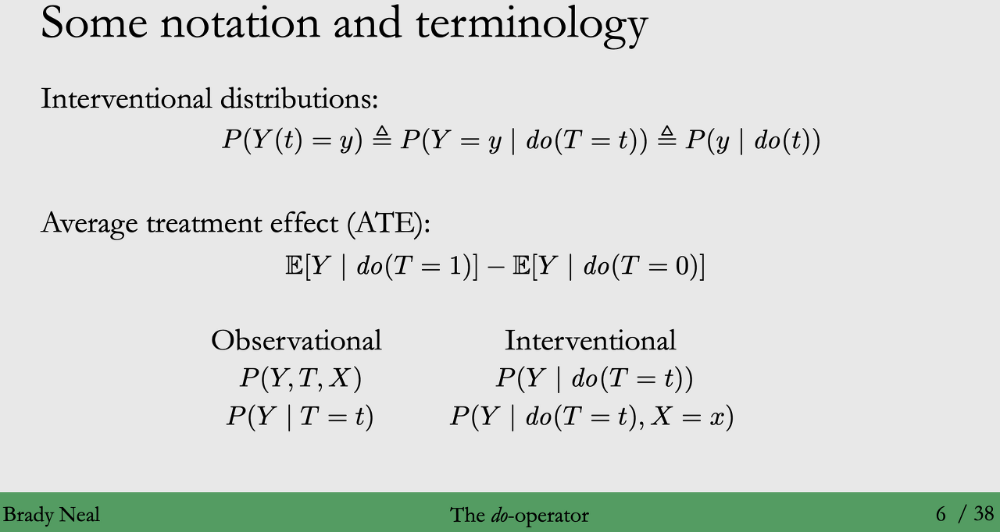
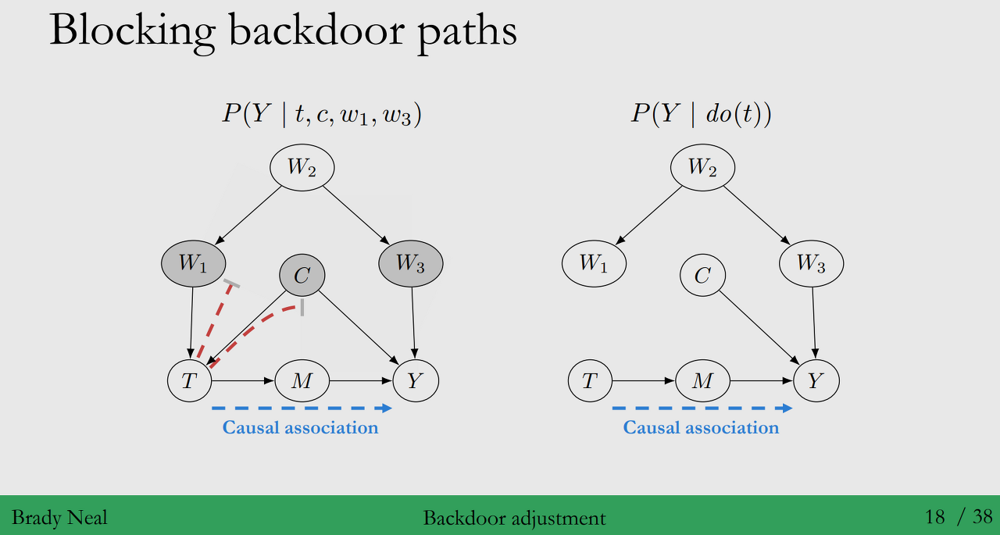
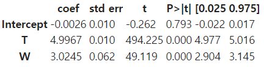

Contents
- Do-operator and Interventional Distributions
- Modularity Assumption
- Backdoor adjustment
- Structural causal models
◦ 강의 영상 링크 : Chapter 4 - Causal Models
작성된 내용 중 개선점이나 잘못된 부분이 있다면 댓글로 알려주세요!
◦ 이번 강의는 아래의 내용을 다룰 예정입니다.
Casual Inference를 할 때, 이론적으로 대답할 수 없는 Causal Estimand를 여러가지 가정을 통해 계산할 수 있는
Statistical Estimand로 추정하게 됩니다. 이때 필요한 개념인 Causal Model에 대해서 학습합니다.

(1) Do-operator란 무엇인가요?
- 정의 : 주어진 현상을 그대로 관찰하는게 아닌, 더 나아가 “개입한다”라는 것을 표현하는 수학 연산자입니다.
(Intervention) - 역할 : Do-operator를 통해, Treament에 영향을 줄 수 있는 모든 요인의 효과를 무시할 수 있게 됩니다.
(Treatment의 부모 노드) - Conditioning (조건) vs Intervention (개입)
◦ Conditioning on \(T=t\) : 전체 모집단 or 관측한 데이터에서 Treatment \(t\)를 받은 모집단의 부분 집합에 해당합니다.
◦ Intervention on \(T=t\) : 처치한 부분 집합이 아닌, 전체 모집단에 대해서 \(T=t\) 로 설정한 것을 말합니다.
- 통상적으로 Intervention은 \(do(T=t), do(t)\)로 표현합니다.
- 이는 주어진 현상을 그대로 관찰하는 것이 아닌, Doing(개입)한다라는 의미로 이해할 수 있습니다.◦ 아래와 같이 Conditioning과 Intervention은 서로 다른 표현방식이므로, 다른 데이터 분포를 형성합니다.

- Observational Distribution vs Interventional Distribution
◦ Observational distribution
- 표현 : \(P(Y),P(Y,T,X)\) - 특징 : 개입(doing)이 없이, 생성된 분포를 Observational distribution이라 합니다.◦ Interventional distribution
- 표현 : \(P(Y|do(T=t)),P(Y|do(T=t),X=x))\)
- 특징 : Treatment에 대한 개입 (do-operator)이 존재합니다.
→ 처치(\(T\))를 통해 Randomized trial실험과 같은 효과를 낼 수 있으며, 이러한 데이터를 통해 추정된 인과 효과를
Causal Estimand라고 합니다.
→ 반면, do-operator를 포함하지 않은 추정치 (Estimand)는 Statistical Estimand라고 합니다.- 예시 : \(P(Y|do(T=t),Z = z)\)가 의미하는 것은 무엇일까요?
→ 모집단에 대해서 \(T=t\)에 대한 개입을 받은 Z=z인 부분집합에 해당하는 데이터라고 할 수 있습니다.
- Identifiability :
◦ 정의 : 개입을 통해 얻은 Causal Estimand를 Identification 가정을 통해 Statistical Estimand로 바꾸는 과정
(직접 계산할 수 없음, Counterfactuals) (직접 계산가능)
→ 이 때, Confounders \(X\)를 제어하는데 필요한 Causal Models의 요소를 이번 Chapter에서 배울 예정입니다!

(참고) Do-operator
여기서 Do-operator는 쉽게 말해서 “개입한다”라는 의미입니다. 다시말해서 Do-operator의 역할은, Treament에 영향을 줄 수 있는 모든 변수의 효과를 무시하게 만들어줍니다.

여기서 \(P(Y|X)\)는 인과효과가 아니에요. 왜냐하면 Confounder로 인한, Backdoor path가 열려 있기 때문이죠.
Do-operator를 적용하면, X에 영향을 주는 C→ X 사이의 연결고리를 그래프 상에서 이론적으로 없애는 것이며,이 상태에서 계산한 \(P(Y|do(X))\) 값이 바로 인과 효과라는 것입니다.

이러한 Do-operator는 실제 계산할 수 있는 값이라기 보다는 이론적인 개념이며, 그래서 결국 Do-operator를 수학적으로 계산할 수 있는 조건부 확률로 만들어줘야 하는데, 이때 필요한 가정을 앞에서 배운 Identification 입니다.
“정리하자면, Interventional probability를 통해 Casual effect를 정의하고, Identifiable인지를 통해서 실제로 추정 가능한지에 대해 판단하며, 이를 통해 인과 관계를 구해보자는 것이죠”
(2) Modularity Assumption
- 앞으로 Identification을 하기 위해서 가정이 필요한데요, 해당 가정에 대해 배워보도록 할게요!
- Causal Indentification를 하기 위한 중요한 가정 : Interventions are local
- 그러면, Interventions are local이 무엇일까요?
◦ 의미 : 어떤 노드에 개입(Intervention)하게 되면, 개입으로 인한 변화가 local하다는 것입니다.
◦ 효과 : 즉, 개입한 노드 \(X_i\)에 대해서 부모 노드 \(pa_i\)가 미치는 영향만 변하고, 나머지 노드에서 주는 영향은 유지가 된다라는 것입니다.
◦ 예시 : 아래 그림에서, 해당 가정에 따르면 원 안에 있는 \(X_i\)의 부모 노드(\(pa_i\))가 미치는 영향만 변화하고,
나머지는 영향은 유지 됩니다.

- Modularity assumption : Interventions are local을 일반화한 가정
◦ 정의 :
어떤 Graph 상 n개의 노드가 존재하고, 그 중 개입(intervention)을 한 노드의 인덱스 집합을 S라고 한다면,
1. 노드 i가 개입되지 않은 경우 (\(i∉S\)) 노드 i (\(X_i\))의 부모 노드(\(pa_i\))가 노드 \(i\)에 미치는 영향은 그대로 유지
2. 노드 i가 개입되었다면 (\(i∈S\)), \(x_i\)값으로 개입한 경우 \(P(x_i|pa_i)\) = 1,
\(x_i\)값으로 개입하지 않은 경우 \(P(x_i|pa_i)\) = 0* [n] = 1,2,3,4…,n 이며 각 숫자는 노드의 index를 의미
\(X_i\): Index가 i인 노드를 의미, \(x_i\) : 값(scalar)을 의미
◦ Assumption violation : 그러면, Modularity 가정이 위배된다는 것은 어떤 의미일까요?
- 노드 \(T\) 에 대한 개입(intervention)이 \(T\)의 부모 노드에 대한 영향력에 변화를 줄 뿐만 아니라,
\(T_2\)의 부모 노드에 대해 변화를 주었을 때, “Intervention이 local이 아니다”라고 합니다.
◦ 예시 :
(a) 개입이 없는 Observational distribution
(b) \(T\)에 개입 : \(T\)의 부모 노드에서 오는 영향만 사라지고, 나머지는 유지됩니다.
(c) \(T_2\)에 개입 : \(T_2\)의 부모 노드에서 오는 영향이 사라지고, 나머지는 유지됩니다.
→ \(P(Y)\), \(P(Y|do(T=t))\), \(P(Y|do(T_2=t_2))\)는 서로 연관되지 않은 완전히 다른 분포가 됩니다.
→ (b), (c) 처럼 edge가 제거된 그래프를 Manipulated graph라고 해요!


- Truncated factorization
◦ 우리는 방금 배운 Modularity assumption을 통해 새로운 식을 추론해낼 수 있어요.
◦ 정의 : Bayesian network factorization에서 modularity assumption이 적용된 식입니다.◦ 과정 : 그럼 지난 시간에 배운 내용을 Remind 해볼까요?
1. Bayesian network factoriazation
= Chain rule of probability + Markov assumption
- Chain rule of probability : \(P(x,y) = P(x)⋅P(y|x)\)
- Markov assumption : 모든 노드는 오직 부모 노드로부터 영향을 받습니다.2. Modularity assumption 적용
여기서 개입(intervention)을 한 노드의 인덱스 집합을 S라고 한다면, \(i∈S\) 인 노드들에 대해서는,
\(P(x_i|pa_i)\) = 1이기 때문에, bayesian network factorization 계산 과정에서 생략이 가능합니다.→ 따라서 \(i∉S\)인 노드들에 대해서만 \(P(x_i|pa_i)\)를 계산하면 되며, bayesian network factorization
식에서 아래와 같은 식을 도출할 수 있습니다.
◦ 예시 : \(P(y|do(t))\)를 Identify 해봅시다.
→ Treatment \(T\)에 영향을 미치는 부분이, 제거 (Trucated) 됩니다.


(3) Backdoor adjustment
- 이전 내용에서 개입(Doing)을 통해서 Treatment에 영향을 주는 외부 변수(Backdoor)를 차단하면서
Casual effect를 구할 수 있다고 했습니다.
- Q : 그러면, Observational data에서 어떻게 Causal effect를 구할 수 있을까요?
A : 관측 데이터인 observational data에서는 개입(intervention)을 통해 그래프를 마음대로 변경하기는 어려워요.
하지만 아래 그림과 같이 Observational data의 Graph에 조건을 추가한다면, \(P(Y|do(X))\)와 동일한 효과를
줄 수 있지 않을까요?* 아래 그래프에서의 Backdoor Paths (Non-causal association)
◦ \(T - W - Y\)
◦ \(T - C - Y\)
- Q : 그렇다면 어떠한 조건을 통해, Observation data에서 Doing(개입)한 것과 동일한 효과를 낼 수 있을까요?
A : Observation data Graph에 추가할 조건에 대한 기준이 필요합니다. 해당 조건을 정리한 것이 바로,
Backdoor criterion입니다.
- Backdoor Criterion :
◦ 정의 : \(T → Y\)간의 Causal association을 제외한 모든 Backdoor paths를 막을 수 있는 변수들의 집합 \(W\)
◦ 조건 :
1. 집합 W는 T에서 Y로 가는 모든 Backdoor paths를 block
2. 집합 W는 T의 어느 자손도 포함하지 말아야 함◦ Sufficient adjustment set : Modularity 가정이 주어졌을 때, 변수들의 집합 \(W\)가 Backddor Criterion을
만족한다면, \(W\)를 Sufficient adjustment set이라고 합니다.◦ 의미 : \(W\)가 Backdoor Criterion을 만족하게 되면, \(T\)에 대한 \(Y\)의 Causal Effect를 Identify 할 수 있어요!
◦ 예시 :
1. 만약 confounder가 있다면, confounder를 통제를 해야 backdoor path를 막을 수 있습니다. 이러한 confounder의 집합이 backdoor criterion을 만족하는 집합이라고 볼 수 있겠죠.
2. 반면에 collider는 통제하면 안됩니다. 따라서 이러한 collider는 backdoor criterion을 만족하는 집합이라고 볼 수 없습니다.
→ 즉, 우리가 해야하는 것은 backdoor criterion을 만족하는 모든 집합을 통제해야해요!
◦ 증명 : 그렇다면 정말 Backdoor adjustment를 통해 Doing(개입)의 효과를 얻을 수 있을까요?
1. \(P(Y|do(t),W)=P(Y|T,W)\) < line 1 to line 2 >
- Backdoor criterion 1번 조건에 의해 \(W\)는 모든 backdoor paths를 차단합니다.
→ 따라서, \(T\)로 들어오는 edge의 영향이 제거 됩니다!- 좌변 : \(do(t)\)의 modularity assumption에 의해 \(T\)에 들어오는 edge의 영향이 제거
- 우변 : \(W\)를 condition함으로써, \(T\)로 들어오는 edge의 영향을 제거2. \(P(W|do(t)) = P(W)\) < line 2 to line 3 >
- \(T=t\) 라고 통제를 했으므로, \(W\)→\(T\) 관계가 사라집니다. (독립)
→ 따라서, Backdoor adjustment를 통해 observational data를 가지고 앞에서 Casual로 정의한
\(P(Y|do(t))\)를 규명할 수 있습니다.

- Backdoor Criterion과 D-separation : D-separation을 backdoor criterion 가지고 정의해봅시다.
1. Backdoor criterion < 왼쪽 그림 >
- 조건 1. 집합 \(W\)는 \(T\)에서 \(Y\)로 가는 모든 backdoor paths를 막아야합니다.
열려 있는 Backdoor path는 \(W_2\) or \(W_1\)→ Blocked
- 조건 2. 집합 \(W\)는 \(T\)의 어느 자손도 포함하지 말아야 합니다.
\(T\)의 자손인 \(X_2\)가 막혀 있습니다. → Unblocked2. Backdoor adjustment 처리 된 그래프 \(G\) < 가운데 그림 >
- 그리고 단 하나의 Association도 존재하지 않는 조건부 독립을 의미하는 D-separated는 \(T\)→\(M_1\)으로 가는
edge를 제거하게 됩니다.3. D-separation < 오른쪽 그림 >
- 이렇게 하여 생성된 그래프를 아래 그림과 같이 \(G_{\bar{T}}\)로 표현하고, \(W\) 컨디션 아래에서 \(Y\)와 \(T\)는
d-separated 되었다고 표현합니다.

(4)Structural causal models (구조적 인과 모델)
- 구조적 인과모델 (Structural Casual Model)은 변수들 사이의 인과 관계를 구조화 된 함수로 나타내는 것입니다.
- 표현 : 수학에서 쓰는 ‘=’ 과는 달리, causation 상에서는 역이 성립하지 않으며, 아래와 같이 표기합니다.
◦ Structural equation B := f(A)
◦ 여기서 A와 B 의 mapping이 deterministic 합니다. 명확한 관계가 이외의 확률적인 부분 (Stochastic)을
고려하기 위해선 B의 unknown causes도 인지해야 해요. 그래서 해당 변수를 고려하면 아래와 같습니다.
→ B := f(A,U)

- Structural Casual Models
◦ 정의 : Structural causal models은 다음 3개의 집합에 대한 튜플(Tuple)입니다.
1. U : 외생(exogenous) 변수, 모델 밖에서 그 값이 결정되는 변수들의 집합
- 부모 노드가 없는 변수로 이 노드의 causes를 모델링 할 필요가 없습니다.
- 아래 그림에서는 변수 \(U_B, U_C, U_D\)에 해당합니다.
2. V : 내생(endogenous) 변수, 모델 내에서 다른 변수들에 의해 설명되는 집합
- 부모노드가 존재하는 변수로 모델링 하고자하는 structural equation의 변수
- 아래 그림에서는 변수 \(B, C, D\)에 해당합니다.3. f : 모델 내 다른 변수들에 따라 V에 속한 변수들의 값을 결정하는 함수 집합
◦ Structural Causal Model (SCM)를 쓰는 이유가 무엇일까요?
1. Potential Outcomes 표현
- SCM에서 \(T=t\)로 고정했을때 나오는 결과 값은 potential outcome 입니다.2. 일반화된 분포 고려 가능
- DAG로 표현 시, Causal direction이 다를 수 있어 인과관계를 확인하기에 적합하지 않아요.
하지만 SCM은 DAG의 구조적 할당을 따르며 SEM (Strctural Equation Models)의 functional form을
통해, intervention set을 지정할 수 있습니다. 따라서, 더 많은 상황에서의 분포를 고려할 수 있어요.3. Causal Models 체계화
- 그래프 기반으로 인과관계를 분석하는 건 간단하지만 이런 그래프가 복잡해지면 직관적인 이해만으론 한계가
존재합니다. 그렇기 때문에, 그래프 기반의 인과관계 분석을 수학적인 언어를 통해 보다 체계화 할 수 있어요.◦ 예시 : 아래 그래프를 SCM 구조로 표현해봅시다.
\(U=\) {\(X\)}, \(V=\) {\(T,Y\)}, \(F=\) {\(f_T,f_Y\)}
\(f_T:=\alpha_1X\)
\(f_Y:=\beta T+\alpha_2X\)


- SCMs에서의 Intervention : Modularity assumption에 의해 SCM(M)과 Interventional SCM(\(M_t\))에는 \(M_t\)에서 개입이 일어나는 변수 \(T\)에 대한 구조방정식이 T:=t로 대체되는 것 외, 개입이 일어나지 않는 다른 변수에 대한 구조 방정식은 동일합니다.

- The Law of Counterfactuals (and Interventions)
◦ 정의 : \(Y_t(u) = Y_{M_t}(u)\)
◦ 의미 : SCM에 대한 충분한 정보가 있는 경우, 실질적으로 Counterfactuals을 계산 할 수 있다는 Principle입니다.
◦ 의의 : Chapter 2에서 이야기한 인과추론의 근본적인 문제이기 때문입니다.
해당 내용은 Chapter 14에서 더 세부적으로 다룰 예정이에요.
- Collider과 Treatment의 자식노드는 왜 Condition을 하지 않을까요?
- Causation을 막기 때문입니다.
◦ 왼쪽 그림 : 아래 그림은 \(T\)와 \(Y\)가 d-seperarted되어, 모든 causation이 막힌 상황입니다.
◦ 오른쪽 그림 : Causation이 있기 위해서는 \(T\)와 \(Y\) 사이에 direct path가 있으면 됩니다.
→ 이러한 blocking causal association 이유로 descendants of treatment를 condition 하지 않습니다.
새로운 형태의 Association이 생기기 때문입니다 : new post-treatment association
◦오른쪽 그림 : \(M\)에서 관측되지 않은 외생변수 \(U_M\)과 \(T\), \(M\)사이엔 collider가 있다고 볼 수 있어요.
→ collider의 자식 노드인 \(Z\)를 condition하면, 새로운 post-treatment association이 발생할 수 있습니다!
새로운 형태의 Association이 생기기 때문입니다 : new pre-treatment association < M-bias >
◦ 아래 그림에서도 \(Z2\) 가 collider이므로, M-bias 형태에서 conditioning 시킬 수 없습니다.


Backdoor Adjustment 예제
◦ 데이터 설명
- 상황 : 미국인의 46%가 고혈압이 있고 고혈압은 사망률 증가와 연관되어 있습니다.
- 가설 : 이때 나트륨 섭취가 고혈압에 영향을 줄까요?
- Outcome : 혈압
- Treatment : 나트륨 섭취
- Covariates \(W\) : 나이, Covariates \(Z\) : 소변에 배출되는 단백질 양
→ 나이는 혈압과 신체의 나트륨 수치를 조절하는 Confounder이며, 소변에 배출되는 단백질 양이 많은 것은
고혈압과 나트륨 섭취량이 많기 때문입니다. 즉, \(Z\)는 Colider이며 \(W\)는 Cofounder 입니다.
◦ Causal Graph
- 위에서 배운 Backdoor criterion에 의하면, Confounder인 \(W\)에 대한 Backdoor path만 막으면 됩니다.
Identification을 통해, 계산할 수 있는 Statistical estimand를 그래프 이용해 도출해 봅시다.- Chapter 3에서 배운 방식으로 Statistical estimand를 작성해보면, \(E_w,zE[Y|t,W]\) 이지만,colider인 \(z\)는
막을 필요가 없어요. 그래서 Causal graph를 통해 도출된 Statistical estimand는 \(E_wE[Y|t,W]\)입니다.
◦ Identification
- 위와 같은 방식을 통해, Backdoor path를 어떤 변수를 가지고 조절해야 하는지 쉽게 알 수 있습니다.- 우리가 구해야하는 값(Causal estimand) : \(E[Y|do(t)]\)
- 우리가 구할 수 있는 값(Statistical estimand from causal graph) : \(E_wE[Y|t,W]\)- 우리가 배운 과정을 적용해보면 최초의 종속변수는 ‘sodium’, ‘age’, ’proteinuria’과 같았겠죠?
이 때, Collider인 proteinuria (단백뇨)를 제거해서 ’sodium’과 ’age’를 종속변수로 활용해봅시다.
◦ Estimation - 데이터를 통해 ATE estimation을 확인하면, 각 Condition 마다 차이는 아래와 같습니다.
- 1) 변수 통제 하지 않았을 때 오류 : 407%
2) \(T\),\(Y\) 변수와 관계된 모든 영향을 통제했을 때 오류 : 19%
3) Backdoor path를 차단했을 때 오류 : 0.02%


- 위 과정을 Python code를 활용해, 간단한 실험을 진행해볼게요.

이전 예제에서의 변수간 영향력을 알 수 없으므로 위 그림과 같이 변수간의 관계를 숫자로 표현하였습니다.
import numpy as np
import pandas as pd
import statsmodels.formula.api as sm
np.random.seed(12345)
num = 10000
W = np.random.normal(size = num)
T = 6 * W + np.random.normal(size = num)
Y = 5 * T + 3 * W + np.random.normal(size = num)
Z = 2 * T + 7 * Y + np.random.normal(size = num)
data = pd.DataFrame({'T':T,'Y':Y,'Z':Z,'W':W})우리가 구하고자 하는 관계는 T가 Y에 미치는 인과관계를 구하고 이때 그림과 같이 5로 설정했습니다.
먼저 어떠한 종속변수를 통제하지 않고 선형회귀모델을 사용하여 관계를 구해볼게요.
model1 = sm.ols('Y ~ T', data).fit()
model1.summary().tables[1]
Y에 대한 T의 영향이 5.4866으로 0.4866이라는 잡음이 생겼네요. 교란변수를 통제하지 않아서 오차가 생겼습니다.
그러면 Y와 T사이 영향을 주는 모든 변수를 통제해볼까요?
model2 = sm.ols('Y ~ T + W +Z', data).fit()
model2.summary().tables[1]
Y에 대한 T의 영향이 -0.1770으로 우리가 구하고자 하는 5란 값과 매우 멀어졌습니다.
collider를 통제하면서 Y와 T간의 새로운 종속 관계를 만들어 내어 collider bias를 만들었군요.
이처럼 모든 변수를 통제하여 collider 또한 통제하게 되면 편향이 발생할 위험이 있습니다.
마지막으로 Y와 T사이 collider인 Z는 제거하지 말고 교란변수인 W만 통제해보겠습니다.
model3 = sm.ols('Y ~ T + W', data).fit()
model3.summary().tables[1]
Y에 대한 T의 영향이 4.9967으로 가장 5에 가까운 결과를 도출해냈습니다.
변수간의 관계를 파악하여 non-causal association은 통제하고 정확한 causal association을 찾아내는 과정은 중요합니다.
To be continued) 다음은 인과관계를 학습하는데 있어, Gold standard라고 불리는 Randomized Experiment에 대해 배울 예정입니다.
Reference
◦ Lecture Notes : 2021 Summer Session on Causal Inference (박지용 교수님) [Link]
◦ Blog
- Backdoor Adjustment [Link]
- 인과추론. 그래프와 확률 [Link]
Citation
@online{kim & hojae jeong2023,
author = {kim \& hojae jeong, seongsoo},
title = {Chapter 4. {Causal} {Models}},
date = {2023-11-05},
url = {https://github.com/CausalInferenceLab/Causal-Inference-Study-for-Analyst/posts/Chapter_4/4.Causal_Models.html},
langid = {en}
}